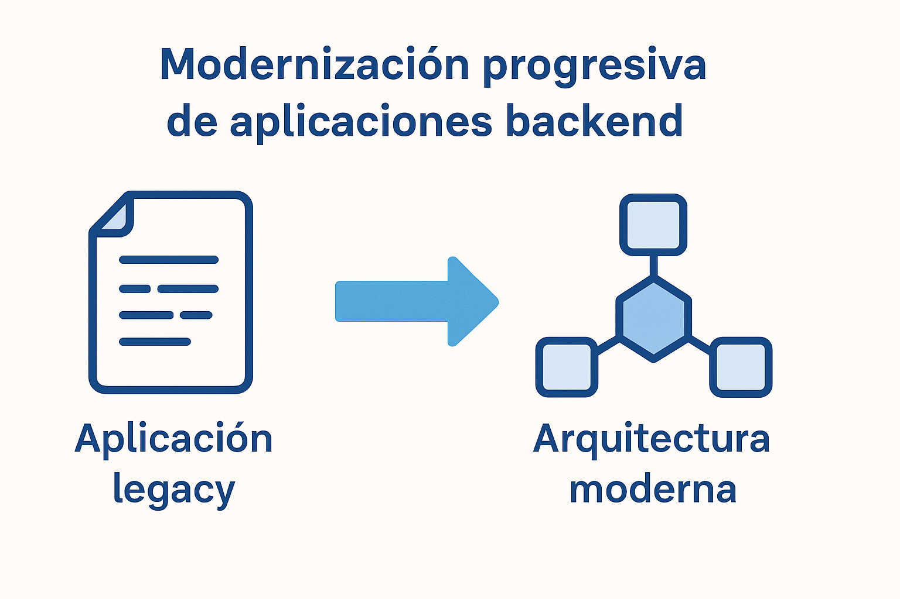

Migración de .NET Framework a .NET Core: enfoque y buenas prácticas
Backend · modernización · .NET
La migración de aplicaciones desde .NET Framework hacia .NET Core / .NET moderno es un proceso que va mucho más allá de una simple actualización de versión.
En proyectos reales, este cambio implica decisiones técnicas, análisis de dependencias y una gestión cuidadosa de riesgos.

¿Por qué migrar a .NET Core?
Algunos de los principales motivos que impulsan esta migración en contextos empresariales son:
- Fin de soporte extendido de .NET Framework
- Mejor rendimiento y eficiencia
- Mayor compatibilidad con arquitecturas modernas y cloud
- Base tecnológica sostenible a largo plazo
Errores frecuentes en procesos de migración
En mi experiencia, muchos problemas en migraciones surgen por decisiones apresuradas o enfoques poco realistas:
- Migrar todo el sistema de una sola vez
- No analizar dependencias obsoletas
- Asumir que el código existente es fácilmente portable
- No considerar impactos en bases de datos y procesos críticos
Flujo recomendado de migración
Un enfoque progresivo y controlado reduce riesgos y permite validar decisiones técnicas en etapas tempranas.
- Análisis del sistema actual y sus dependencias
- Identificación de componentes críticos
- Migraciones parciales o por módulos
- Validación y ajustes progresivos
Buenas prácticas técnicas
- Separar responsabilidades antes de migrar
- Reducir acoplamientos innecesarios
- Revisar acceso a datos y procedimientos almacenados
- Aprovechar la migración para mejorar mantenibilidad
Conclusión
Una migración exitosa hacia .NET moderno no se mide solo por el cambio de framework, sino por la mejora real en calidad, mantenibilidad y proyección futura del sistema.
Si estás evaluando la modernización de un sistema backend, puedes revisar los servicios disponibles o contactarme.